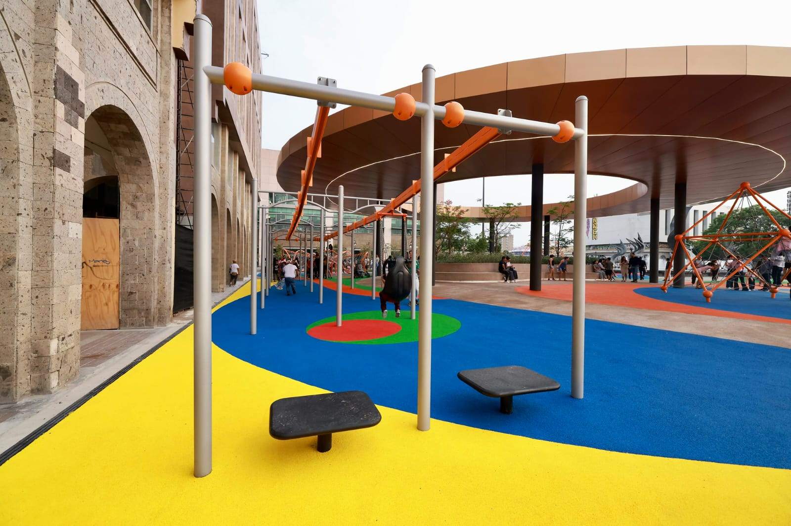
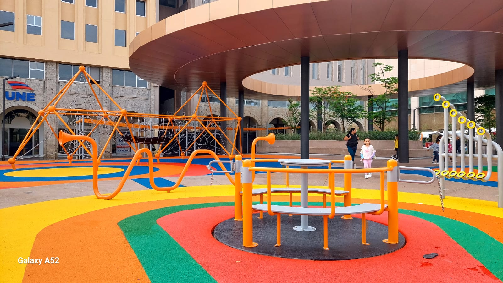
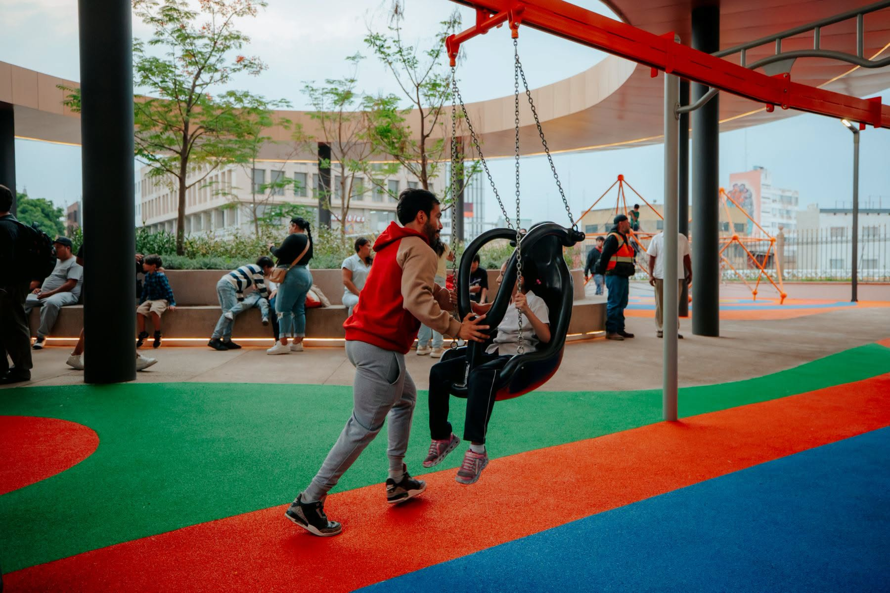
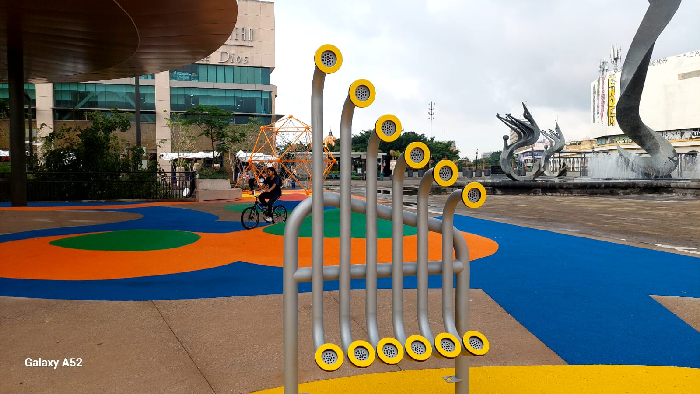

La Plaza Tapatía, uno de los corredores peatonales más emblemáticos del Centro Histórico de Guadalajara, acaba de inaugurar en junio de 2026 una renovación masiva orientada a las familias. Esta intervención incluyó la creación de un área de juegos infantiles de última generación y la modernización de sus espacios públicos.
La construcción de esta zona de juegos formó parte de un paquete integral de rehabilitación del Centro Histórico rumbo al Mundial de Futbol 2026 (que también incluyó la Plaza Fundadores).
El proyecto general superó los 200 millones de pesos (llegando a más de 330 millones en conjunto con otras obras del centro), financiado por el Gobierno del Estado de Jalisco a través de la SIOP (Secretaría de Infraestructura y Obra Pública).
El espacio fue abierto oficialmente el 8 de junio de 2026 por el gobernador del estado y autoridades municipales.
| Imagen | Nombre del juego | Descripción |
|---|---|---|
 |
Tirolesa infantil | Una de las mayores novedades del parque; una estructura segura de baja altura diseñada para que los niños se deslicen por el aire de un extremo a otro de la zona de juegos. |
 |
Módulos de Juego Multiusos | Estructuras interconectadas que incluyen resbaladillas, túneles, pasamanos y escaladoras que fomentan la destreza física y la exploración de los niños. |
 |
Columpios Inclusivos | Área equipada con columpios tradicionales y de tipo "asiento seguro" para garantizar que niños de distintas edades y con capacidades motrices diferentes puedan disfrutar por igual. |
 |
Área de Estimulación Temprana | Espacio delimitado con juegos más pequeños y de piso, ideal para el desarrollo motriz y la recreación segura de bebés y niños de primera infancia. |